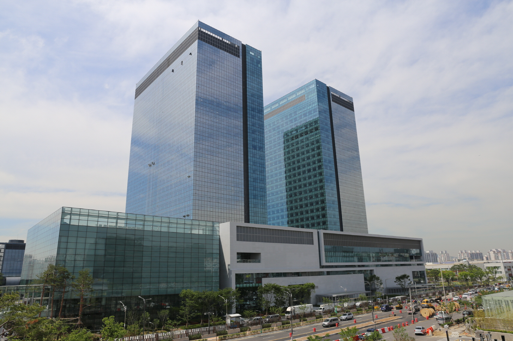

HOME > 기술/제품 > 기술개발
기술개발
“고부가가치 선박 및 해양플랜트의 핵심기술 확보”
연구소 소개
-

생산기술연구센터
-
대덕 선박해양연구센터
-
판교 R&D 에너지플랜트연구센터
기술 소개
-
- Battery System Test-Bed
- 친환경 선박 기술 선도를 위해 칠서에 국내 최초로 선박용 대용량 배터리시스템 TEST-BED를 구축하였습니다.
최대 600kW/360kWh로 시험 가능토록 설계되었습니다. 대용량 리튬이온 배터리와 충방전 전력설비의 안전성과 효율성을 지속적으로 개선 검증하고, 다양한 선종에서 에너지 효율을 향상시킬 수 있는 EMS(에너지관리시스템) 알고리즘 기술 개발에 매진하고 있습니다.
-
- 예인수조
- 대전에 위치한 세계 최대 규모 상업용 예인수조(길이 400m, 폭 14m, 깊이 7m)를 기반으로 선형·추진기의 성능 및 선박 운동·조종 안정성을 확보하고 연료 절감장치를 개발 하는 등 선박의 성능향상 및 선종 개발에 주력하고 있습니다. 예인수조는 선형유도모터 구동으로 저소음·저진동이 특징인 고속선용 예인전차(최대 속도 18m/s)와 일반선용 예인전차(최대속도 5m/s), 대진폭 제어 조종시험대차와 실제 해상의 파도를 모사한 40분할 조파장치를 갖추고 있습니다.
-
- 공동수조
- 공동수조는 28m/s의 최고 유속으로 고속 모형시험이 가능한 제 1시험부와 650톤의 수조수가 최고 유속 12m/s로 순환하며 최대 10미터급의 모형선을 설치할 수 있는 제 2시험부로 구성됩니다. 선체, 추진기 및 연료절감장치의 캐비테이션을 비롯한 유체역학적 성능과 수중방사소음 성능에 대한 평가 시험을 통해 프로펠러·러더의 캐비테이션 방지기술, 연료절감 장치, 고효율 저진동·저소음 추진기 개발 등을 성공적으로 수행하고 있습니다.
-
- 모형제작
- 모형시험으로 실제 선박성능을 정확히 추정하려면 실제 선박 및 추진기를 축소한 정밀모형이 필요합니다. 이를 위해 초정밀 10축(5축 양축가동) CNC Machine와 5축 CNC Machine을 이용, 10미터 길이 모형선과 최대 직경 0.3미터의 추진기를 정밀하고 신속하게 가공합니다.
-
- KOLAS 시승공인
- 삼성중공업 연구소는 지난 1999년부터 KOLAS로부터 역학시험과 화학시험분야의 국제공인시험기관으로 인정받고 있으며, KOLAS로부터 인정받은 공인기관에서 생산한 시험결과는 어떠한 재시험 없이 국제시험기관인정협력체(ILAC, 72개국 86개 시험기관인정기구)와 아시아태평양시험기관인정협력체(APLAC, 23개국 37개 시험기관인정기구)로 부터 해당 공인성적서가 인정됨을 의미합니다.